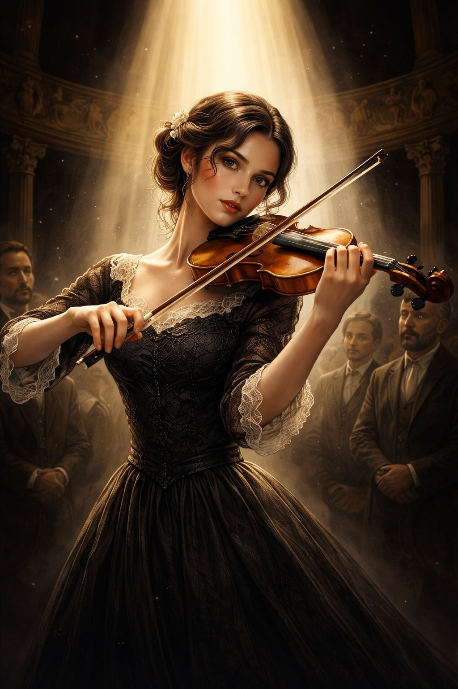

Capitolo 10: Il Violino dell'Addio
Leggi il capitolo in una pagina pulita e passa agli esercizi solo quando vuoi.

Erano passati alcuni giorni da quella folle avventura. Alessio e Laura si trovavano ora in un piccolo appartamento nel cuore di Bordeaux, in Francia. La sera scendeva dolce sulla città, tingendo i tetti di arancione. Laura, in cucina, mescolava una zuppa profumata, il suo viso illuminato dalla luce calda dei fornelli.
Alessio, con le mani in tasca, decise di fare una passeggiata per sgranchirsi le gambe. L’aria era fresca, e il rumore dei passanti che chiacchieravano nei bar lo riportò per un attimo alla normalità. Ma la sua mente non era tranquilla.
Maria.
Il solo pensiero di lei gli faceva stringere il cuore. Meno male che è uscita dalla nostra vita, si ripeté. Ero veramente innamorato di lei… e ho quasi perso Laura per questo.
Ma era sincero?
No.
Non poteva mentire a se stesso. Ogni volta che chiudeva gli occhi, vedeva ancora il suo sorriso, i suoi capelli neri che le cadevano sulle spalle mentre suonava, il modo in cui lo guardava quando pensava che lui non se ne accorgesse.
Ancora penso a lei.
Era come se la sentisse vicina, anche se sapeva che era impossibile.
L’Incontro Inaspettato
Proprio in quel momento, una voce lo fece sobbalzare.
"Ciao, carino."
Alessio si voltò di scatto, il cuore che gli batteva all’impazzata.
Maria.
Era davvero lei, in piedi sotto un lampione, avvolta in un cappotto scuro, i capelli leggermente mossi dal vento. I suoi occhi brillavano di un’emozione che Alessio non riusciva a decifrare.
"Maria… come diavolo ci hai trovato?"
Lei sorrise, quel sorriso furbo che lo faceva impazzire. "Sono una ladra con uno zio poliziotto, ricordi? Trovare due fuggitivi come voi è stato facile."
Alessio non riusciva a crederci. Era come se il destino avesse deciso di giocare con lui ancora una volta.
Maria si avvicinò, e prima che lui potesse dire altro, lo baciò.
Un bacio appassionato, profondo, che gli tolse il fiato. Alessio sentì il mondo girare più veloce, il tempo fermarsi. Ma poi, la realtà lo riportò bruscamente con i piedi per terra.
"Ma… tu hai un ragazzo!"
Maria scosse la testa, ridendo piano. "L’ho inventato per calmare Laura. Ma ormai non importa più."
Poi, con un gesto teatrale, gli porse una grande scatola di legno intarsiato.
Alessio la prese, sentendone il peso. Quando l’aprì, il suo respiro si bloccò.
Il violino d’oro.
Lo strumento luccicava alla luce del lampione, così bello da sembrare irreale. Alessio alzò gli occhi per chiedere spiegazioni, ma Maria era già sparita.
Solo una nota era rimasta nella scatola:
"Per te e per Laura. Vi auguro una vita meravigliosa. Addio, mio principe azzurro. Ero innamorata di te."
Il Ritorno a Casa
Alessio tornò di corsa all’appartamento, il violino stretto tra le braccia. Laura, appena lo vide, lasciò cadere il cucchiaio che aveva in mano.
"Come… come è possibile?"
Alessio scosse la testa. "Non importa come. Ora dobbiamo andare."
"Dove?"
"Mendoza, Argentina. Ho un amico, Roberto. Ha una finca lontano da tutto. Possiamo vivere senza nasconderci."
Laura lo guardò per un lungo momento, poi annuì. Forse aveva capito che dietro quel violino c’era Maria. Forse sapeva che Alessio, in qualche modo, l’aveva amata.
Ma ora non importava.
Importava solo che quel violino d’oro era la loro salvezza. E forse, anche il loro addio a una vita di fughe.